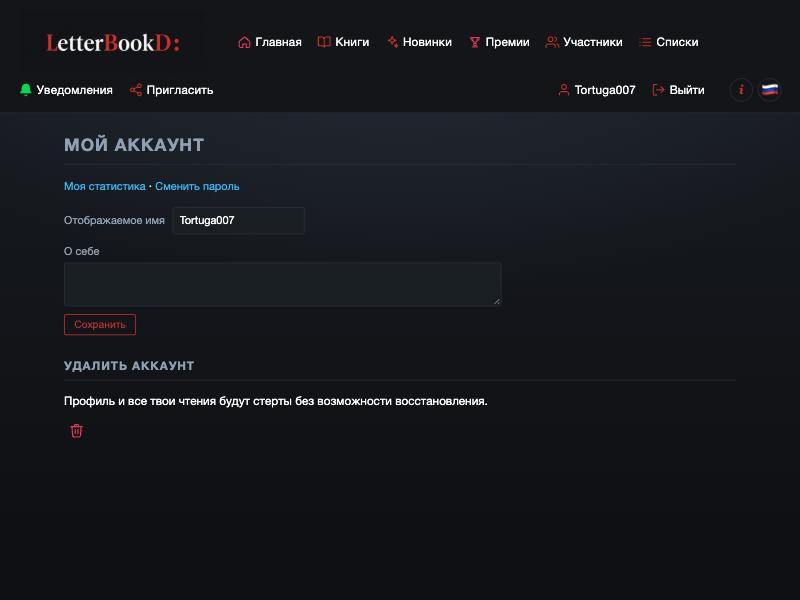

Мой аккаунт
Зачем это нужно: Настроить свою личность в клубе (ник, био) и управлять безопасностью (пароль). Здесь же можно посмотреть статистику чтения и удалить аккаунт навсегда, если хочешь уйти.

Как это устроено
Вверху две быстрые ссылки: «Посмотреть мою статистику» (личная страница статистики) и «Сменить пароль». Ниже форма профиля: «Отображаемое имя» (твой публичный ник) и «Био» (свободный текст, видимый в твоём профиле участникам твоих клубов). Нажми «Сохранить», чтобы применить изменения. Ещё ниже раздел «Удалить мой аккаунт»: значок корзины открывает подтверждение. Удаление необратимо: профиль, чтения, отзывы, списки, всё стирается.
Цепочки действий
Каждая строка — это триггер в интерфейсе, модалка или форма, которые он открывает, и результат.
| Триггер | Модалка / Поля | Эффект |
|---|---|---|
| Ссылка «Посмотреть мою статистику» | — | Открывает страницу статистики: число прочитанных книг, средняя оценка, любимые авторы, динамика во времени. |
| Ссылка «Сменить пароль» | Форма allauth: старый пароль и новый (дважды). | Заменяет пароль. Другие открытые сессии остаются действительными. |
| Кнопка «Сохранить» (форма профиля) | Отображаемое имя (ник, обязательно), Био (свободный текст, необязательно). | Обновляет профиль. Изменения появляются везде, где показан твой ник. |
| Значок корзины под «Удалить мой аккаунт» | Форма подтверждения (отдельная страница). | Удаляет аккаунт навсегда вместе с чтениями, отзывами, списками и приглашениями. Действие необратимо. |